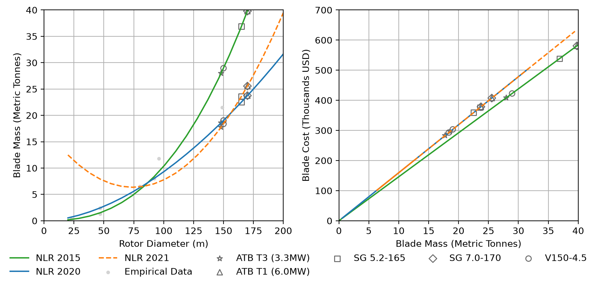

CSM by Example#
To start, we'll import the relevant packages for the whole demonstration. For a more complete
definition of all that is made available for each model, please see the
CSMBase (base model) documentation, or any of the other available models.
import numpy as np
import pandas as pd
from csm import get_model, Land2015NLR, available_models
from csm.tools import plot
pd.options.display.float_format = "{:,.2f}".format
What Models Are Available and How Do I Set Them Up?#
For absolute beginners, we can see which models are available by printing available_models.
print(available_models)
('CSMBase', 'Land2015NLR', 'Land2020NLR', 'Land2021NLR')
For users that don't want to deal with importing multiple models, simply retrieve them with
get_model(), which makes a series of aliases available for convenience.
assert Land2015NLR == get_model(2015) == get_model("land-2015") == get_model("nlr-2015") == get_model("NLR 2015")
Now that we have a variety of convenient means for accessing available models, we can also print out the minimum required inputs to run the model.
nlr2015 = get_model("2015")
print(nlr2015.get_required_inputs())
['turbine_class', 'rated_power_kw', 'rotor_diameter', 'num_bearings', 'blade_has_carbon', 'max_tip_speed', 'tower_length']
Also available with units.
print(Land2015NLR.get_required_inputs(include_units=True))
[('turbine_class', 'unitless'), ('rated_power_kw', 'kW'), ('rotor_diameter', 'm'), ('num_bearings', 'unitless'), ('blade_has_carbon', 'unitless'), ('max_tip_speed', 'm/s'), ('tower_length', 'm')]
Replicating Results from the 2015 WISDEM/Excel Model#
The Land2015NLR model is based on teh WISDEM implementation of the CSM, and the configuration
dictionary is also based on the WISDEM example. To create the model itself, we use
the from_dict method to pass a configuration dictionary, which has additional error handling
to better guide users if their configurations fail to initialize a model.
wisdem_test_inputs = {
"turbine_class": 1,
"efficiency_max": 0.9,
"num_blades": 3,
"num_bearings": 2,
"rated_power_kw": 5000,
"blade_has_carbon": False,
"has_crane": True,
"rotor_diameter": 126,
"max_tip_speed": 80,
"tower_length": 90,
}
nlr2015 = Land2015NLR.from_dict(wisdem_test_inputs)
nlr2015.run()
print(f"Turbine cost (USD/kW): ${nlr2015.turbine_cost_kw:,.2f}")
Turbine cost (USD/kW): $686.00
For incomplete configurations, this approach will fail, as shown below. However, if we add
partial=True, a partial model can be defined. This is useful for parameter sweeps or calculating
a limited number of component values.
partial_inputs = {
"turbine_class": 1,
"num_blades": 3,
"rated_power_kw": 5000,
"blade_has_carbon": False,
"rotor_diameter": 126,
"max_tip_speed": 80,
}
partial2015 = Land2015NLR.from_dict(partial_inputs)
---------------------------------------------------------------------------
AttributeError Traceback (most recent call last)
Cell In[7], line 10
6 "rotor_diameter": 126,
7 "max_tip_speed": 80,
8 }
9
---> 10 partial2015 = Land2015NLR.from_dict(partial_inputs)
File /opt/hostedtoolcache/Python/3.12.14/x64/lib/python3.12/site-packages/csm/models/base_model.py:874, in CSMBase.from_dict(cls, data, partial)
869 if missing and not partial:
870 msg = (
871 f"The class definition for {_name} is missing the following"
872 f" inputs: {', '.join(missing)}"
873 )
--> 874 raise AttributeError(msg)
875 return cls(**data)
AttributeError: The class definition for Land2015NLR is missing the following inputs: tower_length, num_bearings
Now, using partial=True, we can create an incomplete model and get the results we desire.
partial2015 = Land2015NLR.from_dict(wisdem_test_inputs, partial=True)
partial2015.calculate("blade_mass", "blade_cost")
print(f"Single blade mass (kg): {partial2015.blade_mass:,.2f}")
print(f"Single blade cost (thousands, USD): ${partial2015.blade_cost/1000:,.2f}")
Single blade mass (kg): 18,590.67
Single blade cost (thousands, USD): $271.42
Getting Results#
Single Model Runs#
For basic dictionary outputs, any of get_results,
get_mass_results,
get_cost_results, or
get_all_results. Below, we demonstrate retrieving the blade
results.
nlr2015.get_results(["blade_mass", "blade_cost"])
{'blade_mass': 18590.668206489747, 'blade_cost': 271423.7558147503}
For a more complete breakdown, we can also get a DataFrame of all the major mass and cost results.
df = nlr2015.get_component_breakdown()
df["Cost (USD)"] /= 1000
df = df.rename(columns={"Cost (USD)": "Cost (thousands USD)"})
df
| Mass (kg) | Cost (thousands USD) | |
|---|---|---|
| Component | ||
| bearing | 2,245.42 | 10.10 |
| bedplate | 41,765.26 | 121.12 |
| blade | 18,590.67 | 271.42 |
| blade_transport | NaN | 0.00 |
| brake | 5,337.50 | 19.35 |
| controls | 0.00 | 105.75 |
| converter | 0.00 | 0.00 |
| drivetrain_transport | NaN | 0.00 |
| electrical_connection | 0.00 | 209.25 |
| gearbox | 21,875.00 | 218.75 |
| generator | 14,900.00 | 184.76 |
| high_speed_shaft | 994.70 | 6.76 |
| hub | 44,078.54 | 171.91 |
| hub_system | 55,850.44 | 421.36 |
| hub_transport | NaN | 0.00 |
| hydraulic_cooling | 400.00 | 49.60 |
| low_speed_shaft | 22,820.28 | 271.56 |
| nacelle | 151,455.88 | 1,665.61 |
| nacelle_cover | 6,836.69 | 38.97 |
| parts_transport | NaN | 0.00 |
| pitch_system | 10,798.91 | 238.66 |
| platform_mainframe | 8,220.66 | 101.27 |
| power_electronics_transport | NaN | 0.00 |
| rotor | 111,622.45 | 1,235.63 |
| spinner | 973.00 | 10.80 |
| tower | 182,336.48 | 528.78 |
| tower_transport | NaN | 0.00 |
| transformer | 11,485.00 | 215.92 |
| transport | NaN | 0.00 |
| turbine | 445,414.81 | 3,430.02 |
| turbine_kw | NaN | 0.69 |
| yaw_system | 12,329.96 | 102.34 |
IRS Domestic Content Tables#
For helping with calculating the total domestic content, both irs_mpc_breakdown and
total_domestic_content are made available. Note that in both the below examples, the data are
purely expository.
nlr2015.irs_mpc_breakdown(
turbine_production_cost=1500,
tower_flange_material_cost=2000,
tower_flange_production_cost=1000,
)
| cost | Value | ||
|---|---|---|---|
| APC | MPC | ||
| Wind Turbine | Blade | 814,271.27 | 28.02 |
| Rotor Hub | 421,362.42 | 14.50 | |
| Nacelle | 1,665,612.93 | 57.32 | |
| Power Converter | - | - | |
| Production | 1,500.00 | 0.05 | |
| Wind Tower Flange | Material | 2,000.00 | 0.07 |
| Production | 1,000.00 | 0.03 | |
| Tower | - | - | - |
| Steel or iron products in foundation | - | - | - |
| Total | - | 2,905,746.61 | 100.00 |
nlr2015.total_domestic_content(
turbine_production_cost=1500,
tower_flange_material_cost=2000,
tower_flange_production_cost=1000,
domestic=["tower_flange_material", "tower_flange_production", "nacelle"],
return_table=True,
)
| category | cost | Value | Domestic | ||
|---|---|---|---|---|---|
| APC | MPC | ||||
| Wind Turbine | Blade | blade | 814,271.27 | 28.02 | 0.00 |
| Rotor Hub | hub | 421,362.42 | 14.50 | 0.00 | |
| Nacelle | nacelle | 1,665,612.93 | 57.32 | 0.00 | |
| Power Converter | power_converter | 0.00 | 0.00 | 0.00 | |
| Production | turbine_production | 1,500.00 | 0.05 | 0.00 | |
| Wind Tower Flange | Material | tower_flange_material | 2,000.00 | 0.07 | 0.07 |
| Production | tower_flange_production | 1,000.00 | 0.03 | 0.03 | |
| Tower | - | - | 0.00 | 0.00 | 0.00 |
| Steel or iron products in foundation | - | - | 0.00 | 0.00 | 0.00 |
| Total | - | - | 2,905,746.61 | 100.00 | 0.10 |
Parameter Sweeps#
For experimental designs to understand tradeoffs in cost and mass, users can run parameter sweeps
using either the parameterize or
parameterize_subset. For parameterize, the entire
model is run, but for parameterize_subset only a single input can be parameterized.
Note that in the below example, the model does not have to be created first. Additionally, we can provide parameterizations as either a "range" of inputs defining the minimum value, maximum value, and the number of points to generate in between them, or the "inputs," which uses the values as provided.
parameters = {
"max_tip_speed": ("range", 80, 90, 3),
"tower_length": ("inputs", 80, 110),
}
results = ["nacelle_mass", "nacelle_cost", "tower_mass", "tower_cost", "turbine_cost_kw"]
Land2015NLR.parameterize(
base_kwargs=wisdem_test_inputs,
parameterized_kwargs=parameters,
results=results
)
| max_tip_speed | 80.00 | 85.00 | 90.00 | |||
|---|---|---|---|---|---|---|
| tower_length | 80 | 110 | 80 | 110 | 80 | 110 |
| nacelle_cost | 1,665,612.93 | 1,665,612.93 | 1,651,607.01 | 1,651,607.01 | 1,639,157.31 | 1,639,157.31 |
| nacelle_mass | 151,455.88 | 151,455.88 | 149,855.15 | 149,855.15 | 148,432.27 | 148,432.27 |
| tower_cost | 416,412.75 | 794,382.29 | 416,412.75 | 794,382.29 | 416,412.75 | 794,382.29 |
| tower_mass | 143,590.60 | 273,924.93 | 143,590.60 | 273,924.93 | 143,590.60 | 273,924.93 |
| turbine_cost_kw | 663.53 | 739.13 | 660.73 | 736.32 | 658.24 | 733.83 |
Plotting#
Mass vs Cost Comparison for a Single Parameter Sweep#
In the following example, we use each of the available models to create their cost and scaling curves for a single rotor blade as we modify the rotor diameter. We additionally, plot 2 ATB reference turbines and 3 industry reference turbines as examples for each of the models. Finally, we add some synthetic empirical data to visually inspect how the curves fit the empirical data.
In addition to the model and data inputs, we can provide many formatting arguments to control display elements such as the line colors, reference turbine markers, empirical data scatter markers, axis limits, and legend formatting.
Please see the plot_mass_cost_comparison documentation
for full details on available settings.
model_base = {
"NLR 2015": {"turbine_class": 1, "blade_has_carbon": False},
"NLR 2020": {},
"NLR 2021": {},
}
parameterization = {"rotor_diameter": ["range", 20, 200, 21]}
reference_turbs = {
"ATB T3 (3.3MW)": {
"rated_power_kw": 3300,
"rotor_diameter": 148.0,
"tower_length": 100,
"max_tip_speed": 90,
"num_bearings": 1,
"num_blades": 3,
"efficiency_max": 0.9,
"turbine_class": 1,
"blade_has_carbon": False,
},
"ATB T1 (6.0MW)": {
"rated_power_kw": 6000,
"rotor_diameter": 170.0,
"tower_length": 115.0,
"max_tip_speed": 90.0,
"num_bearings": 1,
"num_blades": 3,
"efficiency_max": 0.9,
"turbine_class": 1,
"blade_has_carbon": False,
},
"SG 5.2-165": {
"rated_power_kw": 5200,
"rotor_diameter": 165.0,
"tower_length": 105.0,
"max_tip_speed": 90.0,
"num_bearings": 1,
"num_blades": 3,
"efficiency_max": 0.9,
"turbine_class": 1,
"blade_has_carbon": False,
},
"SG 7.0-170": {
"rated_power_kw": 7000,
"rotor_diameter": 170.0,
"tower_length": 135.0,
"max_tip_speed": 90.0,
"num_bearings": 1,
"num_blades": 3,
"efficiency_max": 0.9,
"turbine_class": 1,
"blade_has_carbon": False,
},
"V150-4.5": {
"rated_power_kw": 4500,
"rotor_diameter": 150.0,
"tower_length": 105.0,
"max_tip_speed": 82.0,
"num_bearings": 1,
"num_blades": 3,
"efficiency_max": 0.9,
"turbine_class": 1,
"blade_has_carbon": False,
},
}
data = [
[47, 2400, np.nan],
[47, 1300, np.nan],
[23, 300, np.nan],
[80, 6500, np.nan],
[149, 21500, np.nan],
[92, 8000, np.nan],
[96.1, 11800, np.nan],
]
empirical_data = pd.DataFrame(data, columns=["rotor_diameter", "blade_mass", "blade_cost"])
model_line_fmt = {
"NLR 2020": {"c": "tab:blue"},
"NLR 2021": {"c": "tab:orange", "ls": "dashed"},
"NLR 2015": {"c": "tab:green"},
}
turbine_formatting = {
"ATB T3 (3.3MW)": {"marker": "*"},
"ATB T1 (6.0MW)": {"marker": "^"},
"SG 5.2-165": {
"marker": "s",
},
"SG 7.0-170": {
"marker": "D",
},
"V150-4.5": {
"marker": "o",
},
}
legend_formatting = {
"loc": "outside lower center",
"ncols": 6,
"bbox_to_anchor": (0.5, -0.1),
"frameon": False,
}
plot.plot_mass_cost_comparison(
base_kwargs=model_base,
parameterization=parameterization,
component="blade",
parameter_label="Rotor Diameter (m)",
cost_basis="thousands",
reference_turbines=reference_turbs,
background_data=empirical_data,
mass_xlim=(0, 200),
mass_ylim=(0, 40),
cost_xlim=(0, 40),
cost_ylim=(0, 700),
model_plot_settings=model_line_fmt,
turbine_scatter_settings=turbine_formatting,
reference_scatter_kwargs={"c": "none", "edgecolor": "dimgray"},
background_scatter_kwargs={"marker": ".", "c": "lightgray"},
legend_kwargs=legend_formatting,
)
